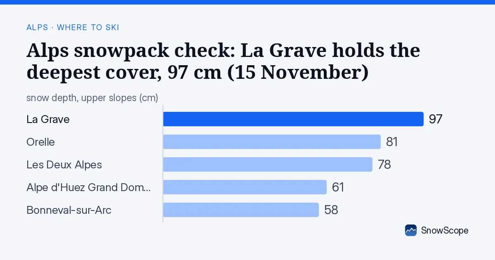

Alps snowpack check: La Grave holds the deepest cover, 97 cm (15 November)
La Grave holds the thickest snow in the Alps today: 97 cm on the upper slopes. The early-winter snowpack is patchy—heights matter far more than valleys—and coverage is already shrinking. Across the region, 851 of 1,178 resorts have snow, spread across 63,570 km² of white ground.
See the live snow forecast for La Grave in the SnowScope appSnow depth, powder alerts and the 3D map, free.
Three resorts, three patterns
La Grave leads with 97 cm on the upper slopes. The snow at La Grave sits thickest at the top (3,543 m) and mid-mountain (3,369 m), where the cover holds 83 cm at both levels. Drop to the base at 3,196 m and you still find 76 cm. That consistency across elevations is unusual so early in the season.
Orelle sits second, 16 cm behind La Grave, with 81 cm high up. Its profile is steeper: the top (3,221 m) has 55 cm, but climb to mid-mountain (2,779 m) and the depth thins to 28 cm. Down at the base (2,338 m), only 7 cm lies on the ground.
Les Deux Alpes tells a different story. The upper slopes hold 78 cm, nearly as much as Orelle, but the vertical drop is huge. At the top (3,511 m) you have 83 cm. Mid-mountain (2,397 m) drops to just 11 cm. The base, at 1,284 m, sits at 0 cm—bare rock and grass.
| Resort | Snow depth | New snow, 72 h | Coming, next days | Top |
|---|---|---|---|---|
| La Grave | 97 cm | 41 cm | 65 cm | 3,543 m |
| Orelle | 81 cm | 27 cm | 77 cm | 3,221 m |
| Les Deux Alpes | 78 cm | 38 cm | 51 cm | 3,511 m |
| Alpe d'Huez Grand Domaine | 61 cm | 37 cm | 54 cm | 3,306 m |
| Bonneval-sur-Arc | 58 cm | 12 cm | 55 cm | 2,948 m |

Snow is vanishing from the lower Alps
Two days ago, on 13 November, 75,850 km² of the Alps were white. Today, 15 November, only 63,570 km² remain covered. That is a loss of more than 12,000 km² in 48 hours. By 18 November, forecasts suggest only 59,240 km² will hold snow.
This rapid retreat is normal for November: weak sun in the valleys, low-lying snow melt first, and high ground keeps its cover longer. It is why early-season skiers ride the top third of every mountain.
What the measuring stations show
Real snow stakes tell a wider story. On 13 November, the Weißseespitze station at 3,499 m measured 264 cm—far deeper than any ski resort's upper slopes. At that height, the mountains hold real snowpack, not the thin cover of early season.
The Sonnblick station at 3,109 m reported 55 cm on 13 November, with 23 cm new in the previous 24 hours. That fresh snow fell while La Grave, Orelle and Les Deux Alpes received their heaviest deposits. Gandegg, lower down at 2,710 m, held only 41 cm on the same date.
Stations measure one spot on one day. Resorts report averages across broad terrain. Neither tells the whole story alone, but together they show that high ground is consolidating snow while low ground is bleaching bare.
How this week ranks against the past
La Grave at mid-mountain (3,369 m) holds just 18 cm now. The long-term average for this date is 70 cm. Only 7 of the past 46 winters were thinner on 15 November. This is a slow start.
Orelle at mid-mountain (2,779 m) sits at 19 cm, against a usual 50 cm for this date. Only 10 past winters matched this thinness. Les Deux Alpes at 2,397 m shows 7 cm today, well below the typical 26 cm—a shortfall that only 10 of 46 past winters experienced. Early November snow is sparse everywhere, but this season lags the average.
What is coming
Fresh snow is forecast for the next three days. La Grave will gain 65 cm by 18 November. Orelle could see 77 cm. Les Deux Alpes and Bonneval-sur-Arc will pick up 55 cm and 51 cm respectively. That will thicken the cover significantly high up.
Watch the freezing level. On 16 November at La Grave it swings between 2,610 m and 3,210 m—a wide range that hints at instability. Wet snow is likely below 2,700 m; above that, snow will stay dry and bond well. By 17 and 18 November the band narrows and cold steadies the snowpack.
Tips for skiers
- High slopes only: on 15 November, mid-mountain depths are half what the upper slopes hold. Stay above 3,000 m for now.
- Rocks hide under thin snow at base elevations. Ski groomed pistes until November snow consolidates; expect hazards off-trail.
- South-facing slopes melt fastest. If you have a choice, ride north-facing terrain or shaded gullies.
- The forecast is good through 18 November but can shift; check the SnowScope map again 24 hours before you travel.
- Before any off-piste or touring, read the official Météo-France BERA avalanche bulletin. Avalanche danger is level 2 today, but fresh snow will change that.
About these numbers
Resort snow depths are the deepest snow on the resort's upper slopes on the date shown; they are estimates for an area, not a measurement at one point. Forecasts can change. Always read the official avalanche bulletin before going off-piste.
Official avalanche bulletins: Météo-France BERA
Cite this report
For research, teaching or the press: the numbers and charts are free to reuse under CC BY 4.0 with this citation.
SnowScope (2026), Alps snowpack check: La Grave holds the deepest cover, 97 cm (15 November), https://snowscope.app/blog/en/2026/11/alps-la-grave-snow-depth-today-15-november-2026.html, accessed 2026-11-15
SnowScope (Atlas Labs). (2026, November 15). Alps snowpack check: La Grave holds the deepest cover, 97 cm (15 November). SnowScope snow reports. https://snowscope.app/blog/en/2026/11/alps-la-grave-snow-depth-today-15-november-2026.html
BibTeX
@misc{snowscope2026alpslagravesnowdepthtoda,
author = {{SnowScope (Atlas Labs)}},
title = {Alps snowpack check: La Grave holds the deepest cover, 97 cm (15 November)},
year = {2026},
month = nov,
howpublished = {\url{https://snowscope.app/blog/en/2026/11/alps-la-grave-snow-depth-today-15-november-2026.html}},
note = {Published 2026-11-15 20:24 UTC; accessed 2026-11-15}
}· CC BY 4.0 · Methods, data and tools →
La Grave: snow and temperature by height, this winter vs last (tools) →
Follow La Grave
Free: a message when fresh snow is coming, and the forecast every morning.
More snow reports

Bonneval-sur-Arc shows 52 cm upper slopes on 8 November. Weeks 10-11 are peak snow months. See what to pack for the forecast.

Les 2 Alpes forecast for 23–29 November: 47 cm at 3200 m, 41 cm at 2400 m, 14 cm at base. Wednesday 25 is the peak day.

Les 2 Alpes reaches 3511 m for high snow in December 2026, with an adult 6-day pass priced at 266.50 EUR.